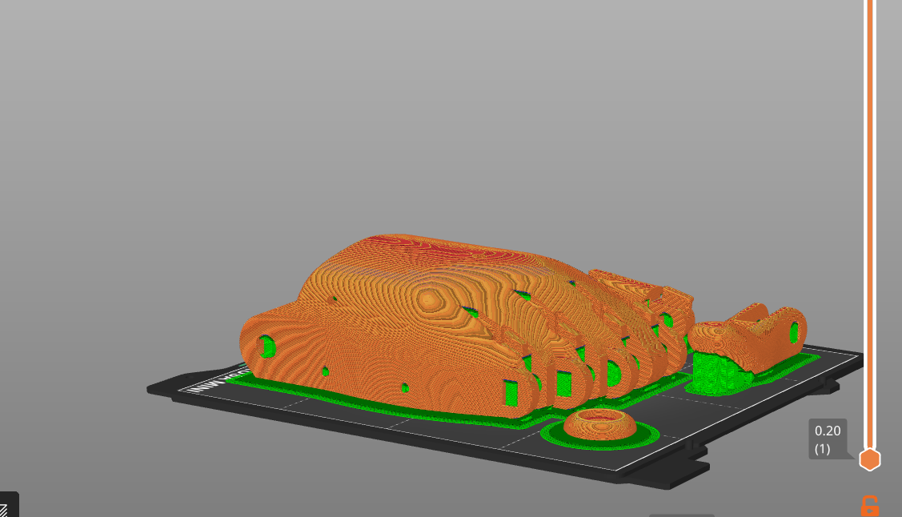
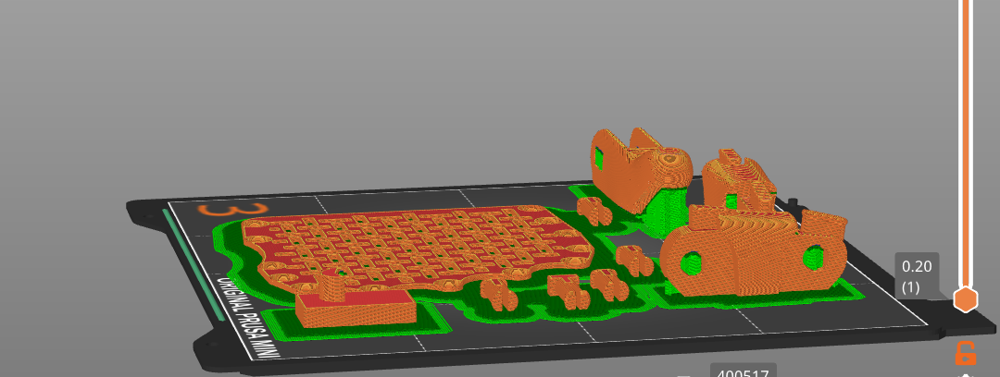
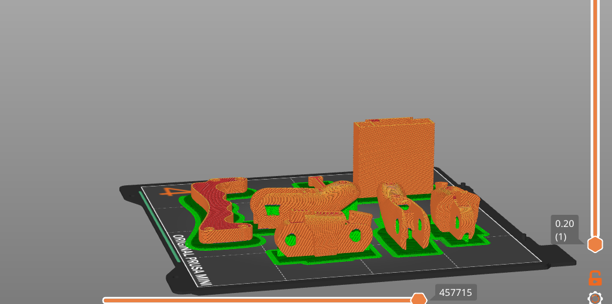
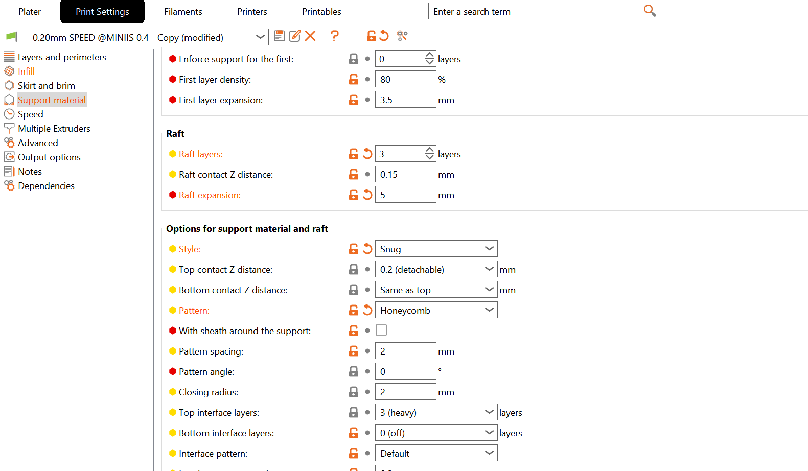
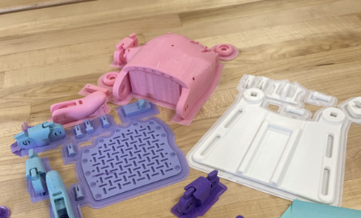
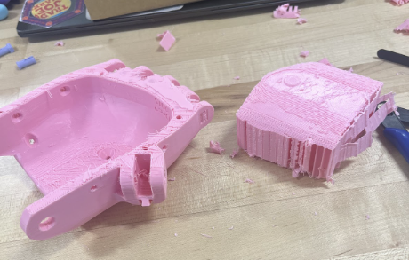
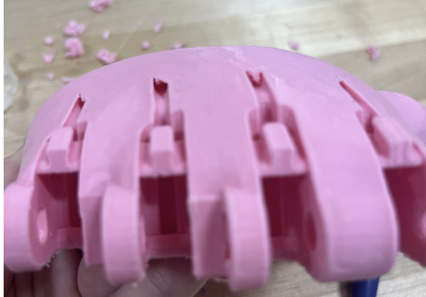
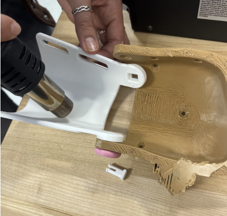

Project 4: Open-source Assistive Technology
March 19th, 2025
Introduction and Overview
For this project we worked in pairs to build a prosthetic hand from open source hardware. We used the e-NABLE platform https://hub.e-nable.org/s/e-nable-forum/, which is a community forum dedicated to accessible design. We focused on the Phoenix Hand V.2, downloading the open source files then scaling, printing, and assembling the hands. This project explores accessibility in design, as well as approaches to open source designs and communities. Throughout the project, we encountered readings and critiques of accessible design and what accessibility and innovation can truly mean. These were valuable resources for thinking through our design expansion, and provided a critical framework for the project.
Project Steps
- Explor e-NABLE and the Phoenix Hand V.2
- Compare and constrast assembly guides
- Download and arrange hand parts
- Print the hand
- Assemble hand
- Expand on the design
- Critique project
- Update Website
- Reflect
e-NABLE and Open Source Hardware
The main resource utilized throughout this project is e-NABLE, an online hub that shares open source hardware for prosthetics. These designs consist of stl files of the parts, and come along with instruction guides, assembly kits, and associated video instructions as well. Every page has room for comments and user feedback where people can provide feedback and advice on the designs and their assembly. The site is community and volunteer run and highlights sharing information and working together for greater accessibility. I really like this site because of this feedback culture and free open source ethic, giving accessibility two meanings. The NIH websitehttps://3d.nih.gov/collections/prosthetics also has this design, along with many others, in a layout similar to thingiverse. NIH provides a larger array of designs, but lacks the community feedback loop that makes e-NABLE so special and useful.
Tutorials and Instruction Guides
After exploring these open source sites, I inspected the Phoenix Hand V.2 https://hub.e-nable.org/p/devices?p=Phoenix+v2+Hand more closely. The resources for this design include all of the stl files, a purchasable assembly kit https://shop3duniverse.com/products/e-nable-assembly-materials-kit#v32622587858, a pdf instruction guidehttps://cdn.thingiverse.com/assets/dd/6b/45/30/fc/Phoenix_v2_assembly_guide.pdf, and feedback from people who had assembled the hand. In addition there are a multitude of video tutorials on assembly. I watched a tutorialhttps://www.youtube.com/watch?v=Der_DD2_zps and read through the pdf guide. I found that both were extensive, but ultimately I preferred the video. The pdf provided counts for the pieces, such as the pins and finger tips. This is very helpful since many things need duplicates and printing the right number of pieces the first time is preferable. I also appreciated being able to zoom in with ease and the highly contrasted colors of the pieces. The video tutorial followed the pdf guide, so it kept many of the previously mentioned benefits. Since its a video there is the benefit of visuals for how to put the hand together in full. I think this was best for the stringing of the hand, where he went through the process slowly. Overall, the video tutorial was more comprehensive and helpful for assembly.
Pheonix Hand V.2 Printing
The next step was to actually print the hand. There are 27 files stored on thingiverse https://www.thingiverse.com/thing:1453190. Then in Prusa Slicer I organized the parts into print beds, which proved to be quite tedious, and scaled the parts to 150%. It was helpful to reference the pdf to know which parts to duplicate and check that everything was there. We chose to build a right hand, and decided to print both the bar and the palm mesh, which provide different ways to wear the hand. The bar allowed us to test the hands functionality, and we ended up never using the mesh. For arranging the print, I wanted to fit everything on to three beds initially, however this was not feasible so eventually I ended up with four print beds for the hand. The print settings I used were 35% infill, with generic supports, and I used a raft layer of 4 to ensure that all the pieces stuck to the bed. I spent a long time arranging the many pieces to not exceed the boundaries of the bed, and found that grouping objects together to move as one to be very helpful. Once the arrangement was complete the printing went smoothly.
Hand Assembly
Putting the hand together took longer than I expected since we had a lot of support material to remove from the pieces. Once most of the removal was done we realised that the holes for the hand to be strung through were filled by supports and it wouldn’t be possible to remove them. We pivoted and found an extra print that hadn’t used supports and went forward with this hand. We also had missed printing another long finger tip. After these mishaps, everything went well. We assembled the fingers onto the hand, then shaped the wrist pieces with a heat gun to fit it to the hand. Then we strung the fingers, tightened and adjusted them a few times, and glued the knots to ensure stability. The wrist box and whipple tree were screwed in, and then the thumb was strung similarly to the fingers. Lastly we screwed the gripper bar to the palm and were able to use the hand.
Expanding the Design
The Phoenix Hand design is meant for someone who requires a prosthetic on only one hand. Therefore we tried to think about what someone would want in a prosthetic that couldn't be done with their other hand. We were inspired by the idea of swiss army knives, and having small tools that could be attached to the fingertips. With our time constraints we made a screw driver attachment to the index finger. We used an open source file for the hole shape. In Fusion we struggled to work with the mesh files, so I put the files through Mesh Lab and reduced the geometry. Then we were able to convert the new meshes to surface and extrude the hole shape, and create that shaped hole in the finger tip. This design expansion would be for someone that has either poor grip strength or wrist mobility in their non-prosthetic hand.
Project Critique
This project introduces the idea of accessible design, and I found many aspects of it positive. However, my main critique is the lack of focus on a client. The project is much more focused on recreating an open source design, what it does, and where it could be expanded. However, as pointed out What Can a Body Do?, Sara Hendron points out that disability and accessibility are relative to our built environment, asking “Who is the world built for?”(20). In her narrative about helping Amanda, she highlights the importance of specific design for a client, “She wanted this lectern to do its work not only as a solution but as a question…Who fits in and moves through space,”(21). This quote emphasizes the importance of the environment in creating disability and the specification necessary to create true accessible design. While I acknowledge that this project is a much smaller scale than what is described in the chapter, there was a real lack of subject in this project which is critical for empathizing in the design process.
Website Update
This time I was more or less happy with my larger design changes from the last project. My navigation bar was having trouble linking to all of the pages, and I could not fix this for the last few weeks. I went in for help with this, and we discovered that my repository was not updating my changes in code. Figuring out why this was happening was difficult, and it proved easier to create a new repository and copy over the information into that one, which worked. So everything is finally working!
Sources
Hendren, Sara. What Can a Body Do?: How We Meet the Built World. Penguin, 2020.
Soldering the car electronics
Scale of tiny car pieces
The car first running on small paper track
3D design flow
First box prototype marked for changes
CAD shell for second prototype
Second prototype
Initial CAD final design
First print of final chassis

Final chassis print